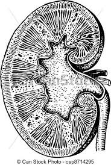

La donación de órganos es un tema muy contigente en nuestro país, y como tal
debemos tomar conciencia de la situación qe se vive hoy en día. Por esto, para
esta entrega decidimos mostrar cómo se distribuye la donación según género y
sistema de salud. Hola
